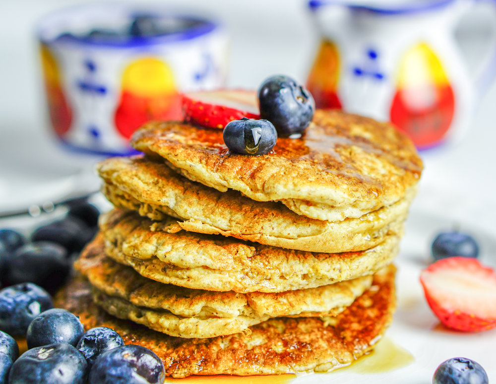

Garbanzo-Oat Pancakes

Description
Beans and grains combined make a nice combination. This recipe was developed for those
on a wheat sensitive diet who can have gluten. It's great for people who need to
be dairy and egg free.
These do not form bubbles on the first side like 'normal' wheat pancakes. They do not
brown like regular pancakes, either.
Ingredients
- ½ cup garbanzo bean flour
- ¾ cup rolled oats
- ¼ cup yellow cornmeal
- ½ teaspoon ground cinnamon
- 1 teaspoon baking powder
- 1 cup water
Steps
- Stir the garbanzo bean flour, oats, cornmeal, cinnamon, and baking powder
together in a mixing bowl until evenly blended. Stir in the water until
only small lumps remain.
- Heat a lightly oiled griddle over medium-high heat until a drop of water
skitters across the surface. Drop batter by large spoonfuls onto the griddle,
and cook until the edges are dry. Flip, and cook until browned on the other side,
about 3 minutes per side. Repeat with remaining batter.
Bon appétit !